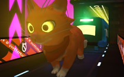

Hi, I'm Ian Green, a Game Designer who has been working at Gears for Breakfast from late 2017 to 2022. During my tenure I worked on A Hat in Time until 2019, and their Second Game (no official name yet) from 2019 onward.
At Gears for Breakfast I specialized in a few different fields that were grouped into the title of Technical Designer. These being: gameplay design, level design, documentation/specification, prototyping, programming, UI design, dialogue writing, and a little bit of 2D and 3D art sprinkled in there for good measure.
In this document you will find a sample of my work at Gears for Breakfast, primarily my 2018-2019 work on A Hat in Time, since the Second Game is still under a non-disclosure agreement. All of the work from A Hat in Time was done using Unreal Engine 3, while the Second Game was made using Unreal Engine 4/5.
For more info, reach out to me at !
Listed below is a collection of some of the gameplay design work I did at Gears for Breakfast! In addition to designing these, I also implemented a lot of them myself, since I wore a few different hats at the company.
Listed below are a few samples of the level design work I did at Gears for Breakfast!
These are some examples of design documentation written for features in A Hat in Time!
The way I write design docs is "thorough but flexible", leaving out specific numbers and not over-detaling features, and focusing more on the design intent. A lot can change over the course of development, and I figure the role of a design doc is to be more of a reference point than a step-by-step guide.
For legal reasons, this is not the real documentation used for these features, but a simulation of what the documentation would have looked like if it were written in 2022.
At Gears for Breakfast I did a variety of art and writing, but I haven't filled out this section yet... Check back later!